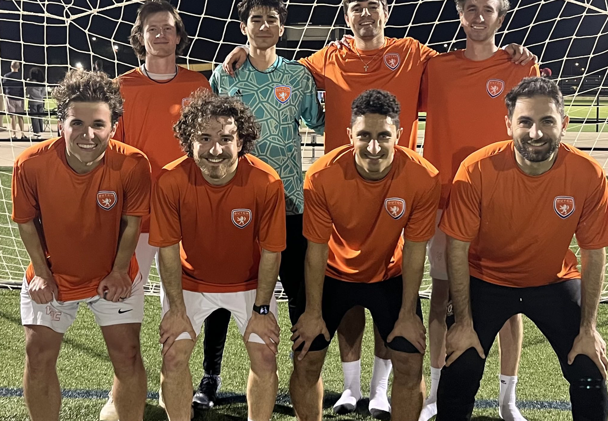

For Brody Ballenger, it started at his first tryout. For you, it might start this May. Dutch Football Club builds footballers one story at a time.
 The Philosophy
The Philosophy
That rings so true for the tiny geographic country of The Netherlands, aka Holland. However, when it comes to the world game of football, the Dutch are titans.
The Dutch changed the trajectory of World Football when they introduced the revolutionary "Total Football" style of play in the '70s which fostered a culture, methodology, and philosophy that future generations still benefit from today. Fitting into Texas 16 times over and equaling the same number of participants in the game just in Texas alone, The Netherlands youth club system (Ajax, Feyenoord & PSV and many more), continue to produce a healthy consistent crop of intelligent and skillful players that dominate the top leagues throughout Europe.
The exceptional talent produced in Holland is displayed on its national team famously wearing the Orange Colors. By adopting and implementing the successful footballing methodology and philosophy of the Dutch, The Dutch Football Club is proud to bring this unique footballing culture to soccer enthusiasts in the North Dallas area.
For those wanting to take their game to the next level, Dutch Lions deliver a soccer experience that inspires a lifelong PASSION for the game, DEVELOPs an attacking-possessive style of play, and prepares players to COMPETE at the highest levels — helping each athlete reach their full footballing potential.
Club Philosophy Details →"Not every college player starts where you'd expect."
Brody Ballenger's Dutch FC story begins at a single open tryout in North Dallas. It ends — for this chapter, anyway — at a college signing table. What happens in between is the methodology. The Friday night TIPS sessions. The select team fixtures. The coaches who believed in the long game. The community that showed up every weekend.
It's the story we want to tell a thousand more times. Maybe yours is next.
Read the Full Story →Dutch FC Select & Academy teams compete at various leagues. Advanced, intermediate and developmental level teams in each age group.
Our camps are based on the Dutch soccer philosophy and methodology that promotes an enjoyable learning environment heavily focused on development.
The TIPS skills method is an training curriculum that boosts your base line fundamentals — first touch, ball mastery, decision-making.
Improve your Goalkeeper Fundamental skills with GKer coach Trey Nickel, and strengthen your foundation to grow into a stronger keeper.
Join our Game Plan for Life where we host FELLOWSHIP of CHRISTIAN ATHLETES (FCA) events, raise funds and volunteer at The Big Pack in Frisco for Feed My Starving Children (FMSC).
Partners & sponsors, college showcase support, and recruitment guidance for U16+ players chasing the next level — like Brody Ballenger's story.

The Dutch FC 1st Team participates in the United Premier Soccer League (UPSL) which is the 4th tier of the US Soccer pyramid, just below the three professional tiers.
With an average age of 22.5 years, over 400 teams nationwide compete for 32 places in the National Playoff Bracket to become National Champions.
There's a belief in North Texas youth soccer you have to choose: beautiful football or winning. Development or results. At Dutch FC, we reject that choice.
Read Article →There is no right or wrong way to any journey, only trade offs.
Read →FOR IMMEDIATE RELEASE
Read →A challenging balancing act for coaches. What's fair and just? Well, the real answer is, "It depends."
Read →A better way to Enjoy, Develop & Compete.
Read →Ranked third in FIFA behind USA and Germany, ahead of France, England, Brazil, and Japan. Over the last decade, the tiny country of the Netherlands has become a formidable contender on the national stage.
Read →The Dutch have earned a deserved reputation for their technical creativity, tactical awareness, attacking possessive style, and ability to know where and how on a football field to find their team mates. These qualities are the result of a guiding philosophy instilled at the grass roots.
Read →Play for Dutch FC. Tryouts run May 11th – June 12th at Fields of Faith Training Facilities, Stonebriar Community Church.